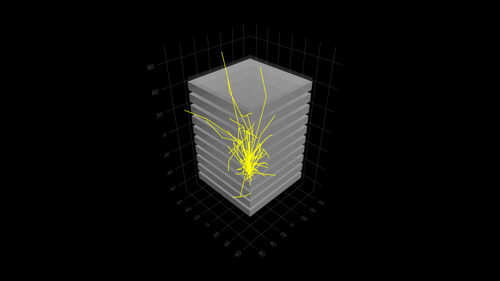

Basic/B4a Example
This example simulates a simple Sampling Calorimeter setup. To demonstrate several possible ways of data scoring, the example is provided in four variants: %B4a, %B4b, %B4c, %B4d. See README file for the example.
You can also download this example as a Jupyter notebook and a plain Julia source file.
Table of contents
- Loading the necessary Julia modules
- Define Detector Parameters struct
- Defining the geometry constructor
- Primary Particle Generator
- Defining the simulation data
- User Actions
- Begin Run Action
- Making the Application
- Run the Example
- Plotting the histograms
Loading the necessary Julia modules
Load the Geant4 and Geant4.SystemOfUnits modules.
using Geant4
using Geant4.SystemOfUnits: cm, cm3, mm, pGy, eplus, keV, g, eV, MeV, mole
using FHist, Plots
# to force loading G4Vis extension we need to load the following module
using CairoMakieDefine Detector Parameters struct
The B4Detector structure is defined with the default detector parameters.
mutable struct B4aDetector <: G4JLDetector
# main input parameters
const nofLayers::Int
const checkOverlaps::Bool
const absoThickness::Float64
const gapThickness::Float64
const calorSizeXY::Float64
# constructor with defaults values for parameters
function B4aDetector(; nofLayers::Int=10,
checkOverlaps::Bool=true,
absoThickness::Float64=10mm,
gapThickness::Float64=5mm,
calorSizeXY::Float64=10cm)
self = new(nofLayers, checkOverlaps, absoThickness, gapThickness, calorSizeXY)
return self
end
end
_layerThickness(d::B4aDetector) = d.absoThickness + d.gapThickness
_calorThickness(d::B4aDetector) = d.nofLayers * _layerThickness(d)
_worldSizeZ(d::B4aDetector) = 1.2 * _calorThickness(d)
_worldSizeXY(d::B4aDetector) = 1.2 * d.calorSizeXY_worldSizeXY (generic function with 1 method)Defining the geometry constructor
function B4aConstruct(det::B4aDetector)::CxxPtr{G4VPhysicalVolume}
(; nofLayers, checkOverlaps, absoThickness, gapThickness, calorSizeXY) = det
nist = G4NistManager!Instance()
layerThickness = _layerThickness(det)
calorThickness = _calorThickness(det)
worldSizeXY = _worldSizeXY(det)
worldSizeZ = _worldSizeZ(det)
G4Material("liquidArgon", z = 18., a = 30.95g/mole, density = 1.390g/cm3)
defaultMaterial = FindOrBuildMaterial(nist, "G4_Galactic")
absorberMaterial = FindOrBuildMaterial(nist, "G4_Pb")
gapMaterial = FindOrBuildMaterial(nist, "liquidArgon")
worldS = G4Box("World", 0.5 * worldSizeXY, 0.5 * worldSizeXY, 0.5 * worldSizeZ)
worldLV = G4LogicalVolume(worldS, defaultMaterial, "WorldLV")
worldPV = G4PVPlacement(nothing, # no rotation
G4ThreeVector(), # at (0,0,0)
worldLV, # its logical volume
"World", # its name
nothing, # its mother volume
false, # no boolean operation
0, # copy number
checkOverlaps) # overlaps checking
##---------------------------------------
calorimeterS = G4Box("Calorimeter", 0.5 * calorSizeXY, 0.5 * calorSizeXY, 0.5 * calorThickness)
calorLV = G4LogicalVolume(calorimeterS, defaultMaterial, "CalorLV")
println(calorLV)
G4PVPlacement(nothing,
G4ThreeVector(),
calorLV,
"CalorPV",
worldLV,
false,
0,
checkOverlaps)
##----------------------------------------------
layerS = G4Box("Layer",
0.5*calorSizeXY, 0.5*calorSizeXY, 0.5*layerThickness)
layerLV = G4LogicalVolume(layerS,
defaultMaterial,
"Layer")
G4PVReplica("Layer",
layerLV,
calorLV,
kZAxis,
nofLayers,
layerThickness)
##---------------------------------------------------
absorberS = G4Box("Abso",
0.5*calorSizeXY, 0.5*calorSizeXY, 0.5*absoThickness)
absorberLV = G4LogicalVolume(absorberS, absorberMaterial, "AbsoLV")
G4PVPlacement(nothing,
G4ThreeVector(0., 0., -0.5*gapThickness),
absorberLV,
"AbsPV",
layerLV,
false,
0,
checkOverlaps)
##--------------------------------------
gapS = G4Box("Gap", 0.5*calorSizeXY, 0.5*calorSizeXY, 0.5*gapThickness)
gapLV = G4LogicalVolume(gapS, gapMaterial, "Gap")
G4PVPlacement(nothing,
G4ThreeVector(0., 0., 0.5*absoThickness),
gapLV,
"GapPV",
layerLV,
false,
0,
checkOverlaps)
##------------------------------------------
##Visualization attributes
SetVisAttributes(worldLV, G4VisAttributes!GetInvisible())
SetVisAttributes(calorLV, G4VisAttributes!GetInvisible())
return worldPV # return a pointer to the G4PhysicalVolume
endB4aConstruct (generic function with 1 method)Instantiate the detector
detector = B4aDetector()Main.var"##277".B4aDetector(10, true, 10.0, 5.0, 100.0)Primary Particle Generator
worldZHalfLength = _worldSizeZ(detector)/2
particlegun = G4JLGunGenerator(particle = "e-",
energy = 300MeV,
direction = G4ThreeVector(0., 0., 1.),
position = G4ThreeVector(0,0,-worldZHalfLength))Geant4.G4JLGunGenerator("ParticleGun", Geant4.G4JLParticleGunData(nothing, "e-", G4ThreeVector(0.0,0.0,1.0), G4ThreeVector(0.0,0.0,-90.0), 300.0), Geant4.var"#init#19"(), Geant4.var"#gen#20"(), Geant4.G4JLGeneratorAction[])Defining the simulation data
const Hist1D64 = Hist1D{Float64}
mutable struct B4aSimData <: G4JLSimulationData
fEnergyDeposit_Abs::Float64
fEnergyDeposit_Gap::Float64
fStepLength_Abs::Float64
fStepLength_Gap::Float64
fEdepHist_Abs::Hist1D64
fStepLenHist_Abs::Hist1D64
fEdepHist_Gap::Hist1D64
fStepLenHist_Gap::Hist1D64
B4aSimData() = new()
endUser Actions
Begin Run Action
function beginrun(run::G4Run, app::G4JLApplication)::Nothing
data = getSIMdata(app)
data.fEdepHist_Abs = Hist1D(;binedges=100.:1.:300.)
data.fStepLenHist_Abs = Hist1D(;binedges=0.:2.:500.)
data.fEdepHist_Gap = Hist1D(;binedges=0.:1.:200.)
data.fStepLenHist_Gap = Hist1D(;binedges=0.:2.:500.)
nothing
endbeginrun (generic function with 1 method)End Run Action
function endrun(run::G4Run, app::G4JLApplication)::Nothing
nothing
endendrun (generic function with 1 method)Begin Event Action
function beginevent(evt::G4Event, app::G4JLApplication)
G4JL_println("===============started event $(evt |> GetEventID)")
data = getSIMdata(app)
data.fEnergyDeposit_Abs = 0.0
data.fStepLength_Abs = 0.0
data.fEnergyDeposit_Gap = 0.0
data.fStepLength_Gap = 0.0
return
endbeginevent (generic function with 1 method)###End event action
function endevent(evt::G4Event, app::G4JLApplication)
data = getSIMdata(app)
# G4JL_println("AbsEdep: $(data.fEnergyDeposit_Abs)")
# println("AbsStepLength: ", data.fStepLength_Abs)
push!(data.fEdepHist_Abs, data.fEnergyDeposit_Abs)
push!(data.fStepLenHist_Abs, data.fStepLength_Abs)
push!(data.fEdepHist_Gap, data.fEnergyDeposit_Gap)
push!(data.fStepLenHist_Gap, data.fStepLength_Gap)
println("Total Energy deposited in Absorber: ",data.fEnergyDeposit_Abs)
println("Total Energy deposited in Gaps: ", data.fEnergyDeposit_Gap)
G4JL_println("================event ended $(evt |> GetEventID) \n")
return
endendevent (generic function with 1 method)Stepping Action
function stepaction(step::G4Step, app::G4JLApplication)
data = getSIMdata(app)
volume = step |> GetPreStepPoint |> GetPhysicalVolume |> GetName
edep = step |> GetTotalEnergyDeposit
stepLength = 0
if step |> GetTrack |> GetDefinition |> GetPDGCharge != 0.
stepLength = step |> GetStepLength
end
if volume[] == "AbsPV"
data.fEnergyDeposit_Abs += edep
data.fStepLength_Abs += stepLength
end
if volume[] == "GapPV"
data.fEnergyDeposit_Gap += edep
data.fStepLength_Gap += stepLength
end
return
endstepaction (generic function with 1 method)Making the Application
evtdisplay = G4JLEventDisplay(joinpath(@__DIR__, "B4aVis.jl"))
Geant4.getConstructor(::B4aDetector)::Function = B4aConstruct
app = G4JLApplication(detector = detector, # detector with parameters
simdata = B4aSimData(), # simulation data
generator = particlegun, # primary particle generator
nthreads = 0, # # of threads (0 = no MT)
physics_type = FTFP_BERT, # what physics list to instantiate
evtdisplay = evtdisplay, # event display
stepaction_method = stepaction,
beginrunaction_method = beginrun, # begin-run action (initialize counters and histograms)
endrunaction_method = endrun,
begineventaction_method=beginevent,
endeventaction_method = endevent
)
configure(app)
initialize(app)
**************************************************************
Geant4 version Name: geant4-11-03-patch-02 [MT] (25-April-2025)
Copyright : Geant4 Collaboration
References : NIM A 506 (2003), 250-303
: IEEE-TNS 53 (2006), 270-278
: NIM A 835 (2016), 186-225
WWW : http://geant4.org/
**************************************************************
Geant4.G4LogicalVolumeAllocated(Ptr{Nothing}(0x000000001b6a8990))
Checking overlaps for volume CalorPV:0 (G4Box) ... OK!
Checking overlaps for volume AbsPV:0 (G4Box) ... OK!
Checking overlaps for volume GapPV:0 (G4Box) ... OK!
Run the Example
Run a single event and display it
# ui`/tracking/verbose 1`
beamOn(app,1)
Run for 100 events
beamOn(app, 100)===============started event 0
Total Energy deposited in Absorber: 271.5302704609608
Total Energy deposited in Gaps: 22.247044337367168
================event ended 0
===============started event 1
Total Energy deposited in Absorber: 274.6097012437138
Total Energy deposited in Gaps: 8.849499385274473
================event ended 1
===============started event 2
Total Energy deposited in Absorber: 272.96409020278264
Total Energy deposited in Gaps: 7.620688171941664
================event ended 2
===============started event 3
Total Energy deposited in Absorber: 276.3075115649578
Total Energy deposited in Gaps: 14.617492816857656
================event ended 3
===============started event 4
Total Energy deposited in Absorber: 271.30106988196525
Total Energy deposited in Gaps: 9.649821775814084
================event ended 4
===============started event 5
Total Energy deposited in Absorber: 277.50875635543196
Total Energy deposited in Gaps: 12.028791713243322
================event ended 5
===============started event 6
Total Energy deposited in Absorber: 276.2774023842731
Total Energy deposited in Gaps: 10.873744405847377
================event ended 6
===============started event 7
Total Energy deposited in Absorber: 272.58335738273445
Total Energy deposited in Gaps: 16.504516172365314
================event ended 7
===============started event 8
Total Energy deposited in Absorber: 268.56514501628266
Total Energy deposited in Gaps: 9.374397195957695
================event ended 8
===============started event 9
Total Energy deposited in Absorber: 266.60954854589994
Total Energy deposited in Gaps: 20.03420842145821
================event ended 9
===============started event 10
Total Energy deposited in Absorber: 264.6632888805728
Total Energy deposited in Gaps: 19.89085973304624
================event ended 10
===============started event 11
Total Energy deposited in Absorber: 261.1659043839921
Total Energy deposited in Gaps: 25.96207683323858
================event ended 11
===============started event 12
Total Energy deposited in Absorber: 263.9113355442207
Total Energy deposited in Gaps: 12.086460646878681
================event ended 12
===============started event 13
Total Energy deposited in Absorber: 275.47935757157643
Total Energy deposited in Gaps: 5.585884189308387
================event ended 13
===============started event 14
Total Energy deposited in Absorber: 266.66981722234993
Total Energy deposited in Gaps: 17.708362841557456
================event ended 14
===============started event 15
Total Energy deposited in Absorber: 265.13480458927836
Total Energy deposited in Gaps: 5.078813905447857
================event ended 15
===============started event 16
Total Energy deposited in Absorber: 280.14444323065277
Total Energy deposited in Gaps: 13.517502162242703
================event ended 16
===============started event 17
Total Energy deposited in Absorber: 273.90318511946424
Total Energy deposited in Gaps: 13.841553385175665
================event ended 17
===============started event 18
Total Energy deposited in Absorber: 285.46817801987845
Total Energy deposited in Gaps: 7.1652911510377315
================event ended 18
===============started event 19
Total Energy deposited in Absorber: 285.42631393208654
Total Energy deposited in Gaps: 10.866951511295085
================event ended 19
===============started event 20
Total Energy deposited in Absorber: 264.32736231604133
Total Energy deposited in Gaps: 7.495083390595656
================event ended 20
===============started event 21
Total Energy deposited in Absorber: 269.46034862233734
Total Energy deposited in Gaps: 19.89924842626208
================event ended 21
===============started event 22
Total Energy deposited in Absorber: 255.9006794410447
Total Energy deposited in Gaps: 28.224088019024187
================event ended 22
===============started event 23
Total Energy deposited in Absorber: 274.8331245850757
Total Energy deposited in Gaps: 13.10464787804353
================event ended 23
===============started event 24
Total Energy deposited in Absorber: 275.6724503633872
Total Energy deposited in Gaps: 9.339361020438217
================event ended 24
===============started event 25
Total Energy deposited in Absorber: 273.14975600312204
Total Energy deposited in Gaps: 7.898540249163019
================event ended 25
===============started event 26
Total Energy deposited in Absorber: 277.0518247299117
Total Energy deposited in Gaps: 13.686805942376653
================event ended 26
===============started event 27
Total Energy deposited in Absorber: 268.4485795022632
Total Energy deposited in Gaps: 9.262851680748316
================event ended 27
===============started event 28
Total Energy deposited in Absorber: 274.56249975416995
Total Energy deposited in Gaps: 14.93133636957628
================event ended 28
===============started event 29
Total Energy deposited in Absorber: 273.26332532863916
Total Energy deposited in Gaps: 6.758370170409846
================event ended 29
===============started event 30
Total Energy deposited in Absorber: 263.28576822444046
Total Energy deposited in Gaps: 18.868108272301328
================event ended 30
===============started event 31
Total Energy deposited in Absorber: 263.9778187057986
Total Energy deposited in Gaps: 14.938126535798482
================event ended 31
===============started event 32
Total Energy deposited in Absorber: 268.53954399514924
Total Energy deposited in Gaps: 10.715023637743306
================event ended 32
===============started event 33
Total Energy deposited in Absorber: 265.1286202168488
Total Energy deposited in Gaps: 15.258216100981054
================event ended 33
===============started event 34
Total Energy deposited in Absorber: 283.369632056252
Total Energy deposited in Gaps: 9.059658581663804
================event ended 34
===============started event 35
Total Energy deposited in Absorber: 265.69368231913654
Total Energy deposited in Gaps: 25.457531655081898
================event ended 35
===============started event 36
Total Energy deposited in Absorber: 287.29181810181876
Total Energy deposited in Gaps: 9.81425407940541
================event ended 36
===============started event 37
Total Energy deposited in Absorber: 279.82455974625196
Total Energy deposited in Gaps: 9.515392827128693
================event ended 37
===============started event 38
Total Energy deposited in Absorber: 274.830992769914
Total Energy deposited in Gaps: 22.05029324833358
================event ended 38
===============started event 39
Total Energy deposited in Absorber: 280.2751679219884
Total Energy deposited in Gaps: 8.185210446275084
================event ended 39
===============started event 40
Total Energy deposited in Absorber: 268.431546034184
Total Energy deposited in Gaps: 21.10387110732702
================event ended 40
===============started event 41
Total Energy deposited in Absorber: 276.51491505734293
Total Energy deposited in Gaps: 11.831995291496469
================event ended 41
===============started event 42
Total Energy deposited in Absorber: 275.91548644033065
Total Energy deposited in Gaps: 13.836939077590575
================event ended 42
===============started event 43
Total Energy deposited in Absorber: 266.1100444061175
Total Energy deposited in Gaps: 10.463924297030259
================event ended 43
===============started event 44
Total Energy deposited in Absorber: 235.38805703709855
Total Energy deposited in Gaps: 14.368025269709882
================event ended 44
===============started event 45
Total Energy deposited in Absorber: 280.73941056822775
Total Energy deposited in Gaps: 10.821263658533569
================event ended 45
===============started event 46
Total Energy deposited in Absorber: 252.7537458555065
Total Energy deposited in Gaps: 18.86936281697088
================event ended 46
===============started event 47
Total Energy deposited in Absorber: 262.6618329377232
Total Energy deposited in Gaps: 10.881715980763683
================event ended 47
===============started event 48
Total Energy deposited in Absorber: 267.5603007432256
Total Energy deposited in Gaps: 16.081054176471376
================event ended 48
===============started event 49
Total Energy deposited in Absorber: 247.69734357784904
Total Energy deposited in Gaps: 31.20048383086373
================event ended 49
===============started event 50
Total Energy deposited in Absorber: 287.54933045810725
Total Energy deposited in Gaps: 7.660629990581378
================event ended 50
===============started event 51
Total Energy deposited in Absorber: 276.2145872190434
Total Energy deposited in Gaps: 8.823261810096348
================event ended 51
===============started event 52
Total Energy deposited in Absorber: 282.9363728704208
Total Energy deposited in Gaps: 10.509016573086056
================event ended 52
===============started event 53
Total Energy deposited in Absorber: 280.1348800668081
Total Energy deposited in Gaps: 12.211694301407004
================event ended 53
===============started event 54
Total Energy deposited in Absorber: 268.4454006318798
Total Energy deposited in Gaps: 26.633374332581337
================event ended 54
===============started event 55
Total Energy deposited in Absorber: 265.63042192729864
Total Energy deposited in Gaps: 26.9953598950771
================event ended 55
===============started event 56
Total Energy deposited in Absorber: 262.8087617810532
Total Energy deposited in Gaps: 23.24308472322126
================event ended 56
===============started event 57
Total Energy deposited in Absorber: 281.8425818009749
Total Energy deposited in Gaps: 7.137476093932297
================event ended 57
===============started event 58
Total Energy deposited in Absorber: 243.86358870779446
Total Energy deposited in Gaps: 28.573968849496776
================event ended 58
===============started event 59
Total Energy deposited in Absorber: 275.5898767996863
Total Energy deposited in Gaps: 8.329332678242565
================event ended 59
===============started event 60
Total Energy deposited in Absorber: 271.85918936550274
Total Energy deposited in Gaps: 19.34917606355801
================event ended 60
===============started event 61
Total Energy deposited in Absorber: 271.2447400994799
Total Energy deposited in Gaps: 9.949441514710973
================event ended 61
===============started event 62
Total Energy deposited in Absorber: 267.93068775530514
Total Energy deposited in Gaps: 5.725603223230712
================event ended 62
===============started event 63
Total Energy deposited in Absorber: 257.2280915823931
Total Energy deposited in Gaps: 10.256436585685329
================event ended 63
===============started event 64
Total Energy deposited in Absorber: 281.6129218959985
Total Energy deposited in Gaps: 12.996706339772318
================event ended 64
===============started event 65
Total Energy deposited in Absorber: 251.20371209563345
Total Energy deposited in Gaps: 32.16117766217677
================event ended 65
===============started event 66
Total Energy deposited in Absorber: 284.4041463408074
Total Energy deposited in Gaps: 10.090488441725848
================event ended 66
===============started event 67
Total Energy deposited in Absorber: 263.96035778323574
Total Energy deposited in Gaps: 29.661540305699255
================event ended 67
===============started event 68
Total Energy deposited in Absorber: 269.59921664642326
Total Energy deposited in Gaps: 18.631364935382752
================event ended 68
===============started event 69
Total Energy deposited in Absorber: 278.5687630954204
Total Energy deposited in Gaps: 11.51049790485247
================event ended 69
===============started event 70
Total Energy deposited in Absorber: 274.8020097846883
Total Energy deposited in Gaps: 10.387141954806443
================event ended 70
===============started event 71
Total Energy deposited in Absorber: 274.7764611985769
Total Energy deposited in Gaps: 8.379843245123523
================event ended 71
===============started event 72
Total Energy deposited in Absorber: 276.18848861009263
Total Energy deposited in Gaps: 13.810238428951555
================event ended 72
===============started event 73
Total Energy deposited in Absorber: 279.7210296261763
Total Energy deposited in Gaps: 14.96372127532957
================event ended 73
===============started event 74
Total Energy deposited in Absorber: 272.7647309025295
Total Energy deposited in Gaps: 14.71608231620604
================event ended 74
===============started event 75
Total Energy deposited in Absorber: 276.59083247132884
Total Energy deposited in Gaps: 13.359287840739055
================event ended 75
===============started event 76
Total Energy deposited in Absorber: 264.80242468370795
Total Energy deposited in Gaps: 29.84032267622901
================event ended 76
===============started event 77
Total Energy deposited in Absorber: 284.68184990270333
Total Energy deposited in Gaps: 12.705001390678385
================event ended 77
===============started event 78
Total Energy deposited in Absorber: 289.9678545924821
Total Energy deposited in Gaps: 4.54552596970594
================event ended 78
===============started event 79
Total Energy deposited in Absorber: 273.3873666184511
Total Energy deposited in Gaps: 10.430262513371451
================event ended 79
===============started event 80
Total Energy deposited in Absorber: 285.65292276101906
Total Energy deposited in Gaps: 6.5432094526258595
================event ended 80
===============started event 81
Total Energy deposited in Absorber: 275.3393433817967
Total Energy deposited in Gaps: 6.92015130244125
================event ended 81
===============started event 82
Total Energy deposited in Absorber: 270.0656844257361
Total Energy deposited in Gaps: 18.078974811282755
================event ended 82
===============started event 83
Total Energy deposited in Absorber: 277.1458536549407
Total Energy deposited in Gaps: 10.296917367794205
================event ended 83
===============started event 84
Total Energy deposited in Absorber: 276.89626825343134
Total Energy deposited in Gaps: 14.91789582027482
================event ended 84
===============started event 85
Total Energy deposited in Absorber: 272.55492005653076
Total Energy deposited in Gaps: 14.266470394104385
================event ended 85
===============started event 86
Total Energy deposited in Absorber: 288.0235261121361
Total Energy deposited in Gaps: 8.451586174889467
================event ended 86
===============started event 87
Total Energy deposited in Absorber: 264.69907610278176
Total Energy deposited in Gaps: 9.55716411814127
================event ended 87
===============started event 88
Total Energy deposited in Absorber: 278.4155437798181
Total Energy deposited in Gaps: 12.387640581532821
================event ended 88
===============started event 89
Total Energy deposited in Absorber: 269.47328536785307
Total Energy deposited in Gaps: 7.260328638944791
================event ended 89
===============started event 90
Total Energy deposited in Absorber: 260.4511929400287
Total Energy deposited in Gaps: 22.793401266537025
================event ended 90
===============started event 91
Total Energy deposited in Absorber: 279.6722220733974
Total Energy deposited in Gaps: 12.755540091185122
================event ended 91
===============started event 92
Total Energy deposited in Absorber: 270.87815689997666
Total Energy deposited in Gaps: 10.364716281417099
================event ended 92
===============started event 93
Total Energy deposited in Absorber: 279.5137884708
Total Energy deposited in Gaps: 10.309408469483841
================event ended 93
===============started event 94
Total Energy deposited in Absorber: 284.2969184748863
Total Energy deposited in Gaps: 14.137393326582005
================event ended 94
===============started event 95
Total Energy deposited in Absorber: 286.76226032277134
Total Energy deposited in Gaps: 8.626755674946576
================event ended 95
===============started event 96
Total Energy deposited in Absorber: 277.94654265404256
Total Energy deposited in Gaps: 14.942657765708086
================event ended 96
===============started event 97
Total Energy deposited in Absorber: 259.93769471623136
Total Energy deposited in Gaps: 13.891338298218164
================event ended 97
===============started event 98
Total Energy deposited in Absorber: 264.202396766432
Total Energy deposited in Gaps: 22.948150076431723
================event ended 98
===============started event 99
Total Energy deposited in Absorber: 275.7902709947264
Total Energy deposited in Gaps: 17.515152162298065
================event ended 99
Plotting the histograms
data = getSIMdata(app)
lay = @layout [°; °; °; °]
img = Plots.plot(layout=lay, show=true, size=(800,1000))
Plots.plot!(subplot=1, data.fEdepHist_Abs, title="Total EDep in Absorber", xlabel="Edep (MeV)", label="Abs Edep", show=true)
Plots.plot!(subplot=2, data.fEdepHist_Gap, title="Total EDep in Gaps", xlabel="Edep (MeV)", label="Gap_Edep", show=true)
Plots.plot!(subplot=3, data.fStepLenHist_Abs, title="Total StepLeng in Absorbers", xlabel="Step Length (mm)", label="Abs_StepLen", show=true)
Plots.plot!(subplot=4, data.fStepLenHist_Gap, title="Total StepLeng in Gaps", xlabel="Step Length (mm)", label="Gap_StepLen", show=true)
This page was generated using Literate.jl.